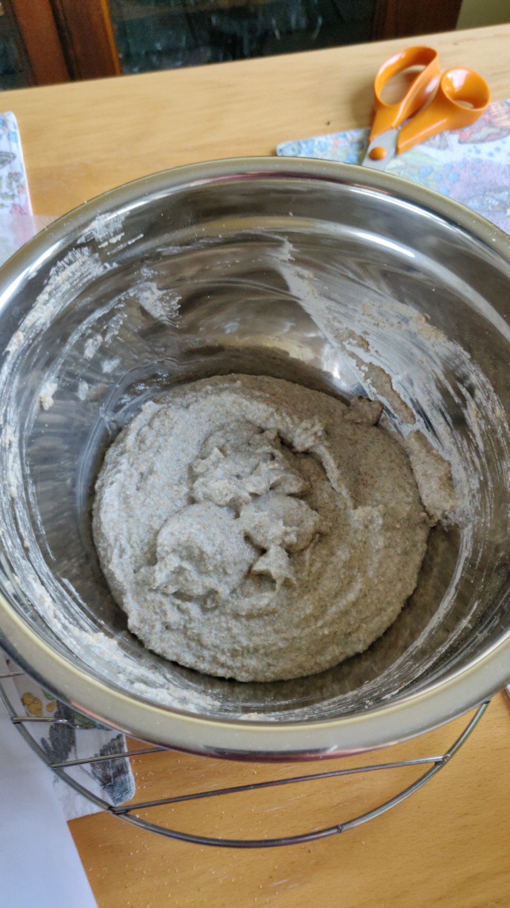
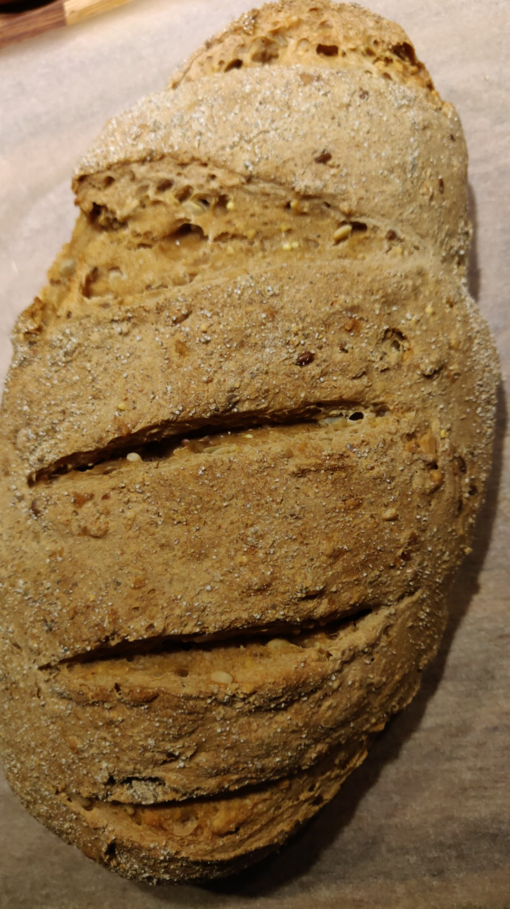

Juureen leivottu leipä

Juureen leivottu leipä on hyvää. Koska hyvin toimivaan juureen tehtyyn taikinaan ei tarvitse lisätä hiivaa, se sopii myös niille, jotka eivät voi tai halua syödä hiivaa sisältäviä tuotteita.
Pataleipätyyppinen leipä
Pataleivän leipomisessa tehdään hiivataikina, jonka ainekset sekoitetaan yhteen ilman vaivaamista. Taikina laitetaan jääkaappiin lepäämään vähintään muutamaksi tunniksi, mutta leivän maku paranee, jos taikina saa levätä ainakin yön yli.
Hiivalla kohotettu leipä
Hiivalla kohotettu taikina on varmaan tutuin ja yleisin tapa leipoa leipää kotona. Hiivataikinasta on helppo saada kauniita leipiä aikaiseksi, kunhan taikinan muistaa vaivata kunnolla. Jos leipä ei kohoa uunissa ja jää kivikovaksi, syynä on usein liian vähäinen vaivaus.